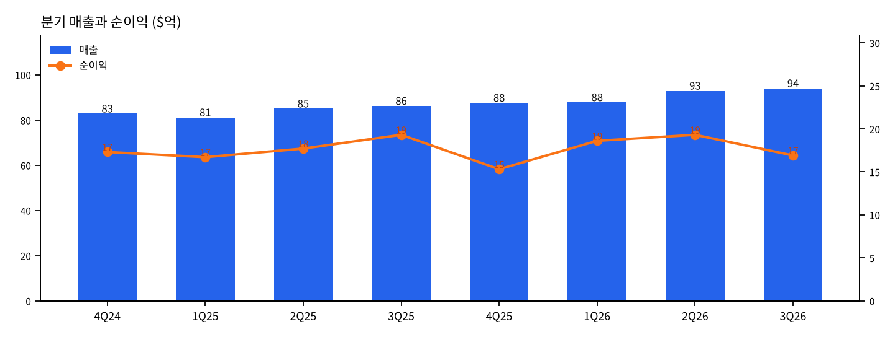
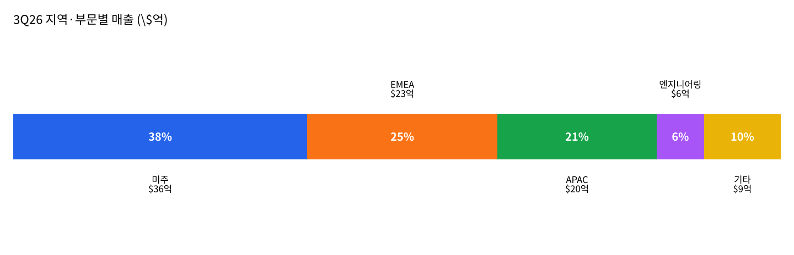
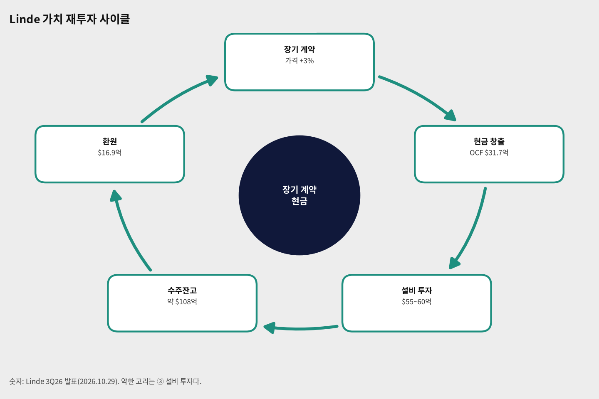

Linde는 전 세계 산업 고객에게 산소·질소·아르곤·수소 같은 가스를 장기 계약으로 공급하는 회사다. 전자·화학·에너지 고객 수요가 물량을 늘렸다.
| 항목 | 내용 |
|---|---|
| 종목 | Linde (LIN) · NASDAQ · 소재(산업가스) · 영국 워킹 |
| 멀티플 | PER·P/S는 08·09 항목 표 참조(조정 EPS 기준 PEG 본문) |
| 최근 분기(3Q26) | 매출 $94.0억, 조정 영업이익률 29.4%, 조정 EPS $4.59 |
| 수주잔고 | 프로젝트 약 $108억(가스 판매 $79억 + 플랜트 판매 $29억) |
| 직원 수 | 약 65,177명(트레이딩뷰) |
| 직책 | 인물 | 역할·특징 |
|---|---|---|
| CEO | 산지브 람바(Sanjiv Lamba) | 실적이 계속 개선되고 있다고 설명 |
| CFO | 맷 화이트(Matt White) | (확인 필요) |
경영 스타일: '장기 계약·가격 결정력으로 안정적 이익'. 가격 3%와 물량 2%로 성장하고 비용 전가 계약으로 마진을 방어한다.
현장 공급과 장기 계약으로 안정적 현금을 만든다.
전자·수소 프로젝트 수주잔고와 설비투자로 성장한다.
다음 실적발표는 세 가지 질문에 답하는 자리다.
1. 가격·물량 성장이 유지되나?
2. 수주잔고가 설비투자로 이어지나?
3. GAAP과 조정 EPS 차이가 줄어드나?
한 줄 판정 규칙: 첫 질문(기초 성장)과 둘째 질문(수주잔고 전환)이 이어지면 약한 고리(GAAP 비용)가 풀린다.
일정: 4Q26 실적 발표는 트레이딩뷰 기준 2027.02.11(확인 필요). 회사 4Q 조정 EPS 가이던스는 $4.40~4.50이다.
| 분기 | 매출 | 순이익 | EPS | 조정 EPS | 특이 사항 |
|---|---|---|---|---|---|
| 4Q24 | $82.8억 | $17.3억 | 3.60 | 3.97 | |
| 1Q25 | $81.1억 | $16.7억 | 3.51 | 3.95 | |
| 2Q25 | $85.0억 | $17.7억 | 3.73 | 4.09 | |
| 3Q25 | $86.2억 | $19.3억 | 4.09 | 4.21 | |
| 4Q25 | $87.6억 | $15.3억 | 3.26 | 4.20 | |
| 1Q26 | $87.8억 | $18.6억 | 3.98 | 4.33 | |
| 2Q26 | $92.9억 | $19.3억 | 4.15 | 4.50 | |
| 3Q26 | $94.0억 | $16.9억 | 3.66 | 4.59 | GAAP EPS에 비용 절감 등 $4.25억 비용, 조정 EPS $4.59 |
3Q26 매출 $94.0억(+9%, 기초 +5%), GAAP EPS $3.66(-11%), 조정 EPS $4.59(+9%)(회사 발표 2026.10.29). 조정 EPS는 Linde AG 합병 회계 효과와 비용 절감 비용 등을 제외한다. 매출·순이익·EPS(GAAP 희석)는 트레이딩뷰 스캐너, 조정 EPS는 트레이딩뷰 실적 페이지의 Reported 값이다. 분기 정렬은 오래된 분기→최신이다.

흐름 요약: 최근 분기 매출은 $94.0억로 전년 동기 $86.2억 대비 +9.0%, 순이익은 $16.9억(전년 $19.3억)다. 최근 4분기 GAAP EPS는 $15.05, 조정 EPS는 $17.62다.
| 지역·부문 | 내용 | 3Q26 매출 | 비고 |
|---|---|---|---|
| 미주 | 북미·남미 | $36.0억 | +11% |
| 유럽·중동·아프리카 | EMEA | $23.3억 | +7% |
| 아시아·태평양 | APAC | $19.5억 | +12% |
| 엔지니어링 | 플랜트 설계·판매 | $5.8억 | +12% |
| 기타(내 계산) | 총액 − 위 합계 | 약 $9.4억 | 총 $94.0억 |

미주가 매출의 약 38%(내 계산)로 가장 크고, 아시아·태평양이 가장 빠르게 늘었다.
Linde는 '고품질 솔루션·기술로 고객의 생산성을 높여 세상을 더 생산적으로 만드는 것'을 목표로 한다.
| 축 | 내용 |
|---|---|
| 수주 | 프로젝트 수주잔고 약 $108억 |
| 투자 | FY26 설비투자 $55~60억 |
| 환원 | 3Q $16.9억 |

| 이동평균 | 값 | 종가 대비 | 위치 |
|---|---|---|---|
| 5일선 | $519.86 | -1.5% | 종가 아래 |
| 20일선 | $516.07 | -0.8% | 종가 아래 |
| 50일선 | $492.96 | +3.9% | 종가 위 |
| 100일선 | $496.28 | +3.2% | 종가 위 |
| 200일선 | $497.52 | +2.9% | 종가 위 |
52주 고가 $548.20(2026-07-07)·저가 $387.78(2025-12-08) 범위에서 종가 $512.16는 50일선, 100일선, 200일선을 웃돌고 5일선, 20일선은 밑돈다.
| 규칙 | 기준 | 현재 값 | 신호 |
|---|---|---|---|
| 장기 추세 필터 | 종가 vs 200일선 | $512.16 > $497.52 | 매수 |
| 중장기 교차 | 50일선 vs 200일선 | $492.96 < $497.52 | 매도 |
| 단기 교차 | 20일선 vs 50일선 | $516.07 > $492.96 | 매수 |
| 돈키언 채널 | 55일 고가 $533.39 / 저가 $454.19 | 중간값 $493.79 위 | 매수 |
| 1개월 모멘텀 | 21거래일 수익률 | +2.0% (기준 $501.89) | 매수 |
| 3개월 모멘텀 | 63거래일 수익률 | +6.4% (기준 $481.29) | 매수 |
| 6개월 모멘텀 | 126거래일 수익률 | +1.1% (기준 $506.63) | 매수 |
| 12개월 모멘텀 | 252거래일 수익률 | +22.6% (기준 $417.85) | 매수 |
| 종합 (8개 평균) | +0.75 | 강한 매수 |
해석: 매수 신호 7개(장기 추세 필터, 단기 교차, 돈키언 채널, 1개월 모멘텀, 3개월 모멘텀, 6개월 모멘텀, 12개월 모멘텀), 매도 신호 1개(중장기 교차). CTA 점수 +0.75(강한 매수). 14일 ATR $9.97 (1.9%), 52주 고가 $548.20 · 저가 $387.78.
| 가격 | 기준 | 무엇이 바뀌나 |
|---|---|---|
| $533.39 | 55일 고가 | 돌파 시 채널 상단 갱신 |
| $506.63 | 6개월 모멘텀 기준가 | 종가가 이 가격 위면 6개월 신호 매수 |
| $501.89 | 1개월 모멘텀 기준가 | 종가가 이 가격 위면 1개월 신호 매수 |
| $497.52 | 200일선 | 종가가 이 선 위/아래인지로 장기 추세 신호가 바뀜 |
| $493.79 | 돈키언 중간값 | 55일 채널 중간값 위/아래로 신호가 바뀜 |
| $481.29 | 3개월 모멘텀 기준가 | 종가가 이 가격 위면 3개월 신호 매수 |
| $454.19 | 55일 저가 | 이탈 시 채널 하단 갱신 |
| $417.85 | 12개월 모멘텀 기준가 | 종가가 이 가격 위면 12개월 신호 매수 |
가격 수준은 신호가 바뀌는 기준선일 뿐 진입·청산 가격 제안이 아니다. 20일/50일 교차는 이동평균 자체가 움직여 단일 가격으로 표시하지 않았다. 일봉·주봉은 종가 기준 직접 계산(고저 데이터 미사용)이다.
| 악재 요인 | 내용 | 강도 |
|---|---|---|
| GAAP 비용 | 비용 절감 등 $4.25억 비용 | 중간 |
| 경제 개선 미반영 | 가이던스 중간값이 경기 개선을 가정하지 않음 | 참고 |
| 링케어(Lincare) | 성과 부진 요인으로 지목 | 중간 |
| 높은 멀티플 | PER 34배, 전체 PEG 42.5(트레이딩뷰, GAAP) | 높음 |
| 티커 | 회사 | PER(TTM) | PEG | P/S | EPS 성장(YoY) |
|---|---|---|---|---|---|
| LIN | Linde | 29.1배 | 3.37 | 6.49배 | +9% |
| APD | Air Products | 129.3배 | – | 5.27배 | – |
| SHW | Sherwin-Williams | 31.9배 | 5.05 | 3.35배 | +6% |
| ECL | Ecolab | 40.9배 | 7.04 | 4.91배 | +6% |
비교 결론: Linde PER은 Sherwin-Williams와 비슷하고 Ecolab보다 낮은 구간이다.
Linde는 영업현금흐름 $31.7억으로 설비투자와 환원을 함께 감당한다.
| 지표 | 값 | 출처 | 해석 |
|---|---|---|---|
| 현금·단기투자 | $39억 | 트레이딩뷰 스캐너(최근 분기) | |
| 총부채 | $267억 | 트레이딩뷰 스캐너(최근 분기) | |
| 순부채(부채−현금) | $228억 | 내 계산 | 현금 대비 부채 부담 |
| 잉여현금흐름(TTM) | $51억 | 트레이딩뷰 스캐너 | |
| TTM 매출 | $362억 | 트레이딩뷰 스캐너 |
| 기준 | 매출 | P/S | 비고 |
|---|---|---|---|
| 내 계산(종가 ÷ 최근 4분기 매출 합계) | $362.3억 | 6.49배 | 시총은 정렬용 데이터에서만 사용 |
| 동종(트레이딩뷰) | – | APD 5.27배 · SHW 3.35배 · ECL 4.91배 | 11.19 |
해석: P/S 6.57배는 Air Products(5.27배)보다 높다.
EBITDA는 영업활동의 현금 창출력을 보는 지표이고, PEG는 PER을 EPS 성장률로 나눈 값이다. EBITDA·FCF는 트레이딩뷰 TTM 값이다.
| 지표 | 값 | 산출 |
|---|---|---|
| EBITDA(TTM) | $136억 | 트레이딩뷰 스캐너 |
| EBITDA 마진 | 37.6% | EBITDA ÷ TTM 매출(내 계산) |
| FCF 마진 | 14.1% | FCF ÷ TTM 매출(내 계산) |
| PER(GAAP TTM) | 34.0배 | $512.16 ÷ $15.05 |
| PER(조정 TTM) | 29.1배 | $512.16 ÷ $17.62 |
| 방식 | PER | EPS 성장률 | PEG | 판정 |
|---|---|---|---|---|
| 조정 EPS (TTM $17.62) | 29.1배 | +9% ($16.22 → $17.62) | 3.37 | 기준 초과 |
| GAAP EPS (TTM $15.05) | 34.0배 | +1% ($14.93 → $15.05) | 42.34 | 기준 초과 |
판정: 조정 EPS 기준 PEG 3.37 → 1.0 초과 PEG 기준은 1.0 이하 투자 적격, 0.5 이하 적극 매수다. EPS 성장률은 최근 4분기 EPS 합계를 직전 4분기 합계와 비교한 값(내 계산)이고, 일회성 항목이 있으면 조정 EPS 행을 함께 본다.

Linde의 사이클은 장기 계약 → 현금 → 설비 투자 → 수주잔고 → 환원이다.
| 고리 | 현재 숫자 | 고리 강도 | 약해지는 신호 |
|---|---|---|---|
| ① 장기 계약 | 가격 +3%, 물량 +2% | 강함 | 가격 둔화 |
| ② 현금 창출 | OCF $31.7억, 마진 29.4% | 강함 | GAAP 비용 |
| ③ 설비 투자 | FY26 $55~60억 | 진행 중 | 착공 지연 |
| ④ 수주잔고 | 약 $108억 | 강함 | 취소·지연 |
| ⑤ 환원 | 3Q $16.9억 | 강함 | 투자 우선 |
사이클의 특징: 가장 약한 곳은 ③ 설비 투자다. 큰 투자와 수주잔고 전환 속도가 확인 포인트다.